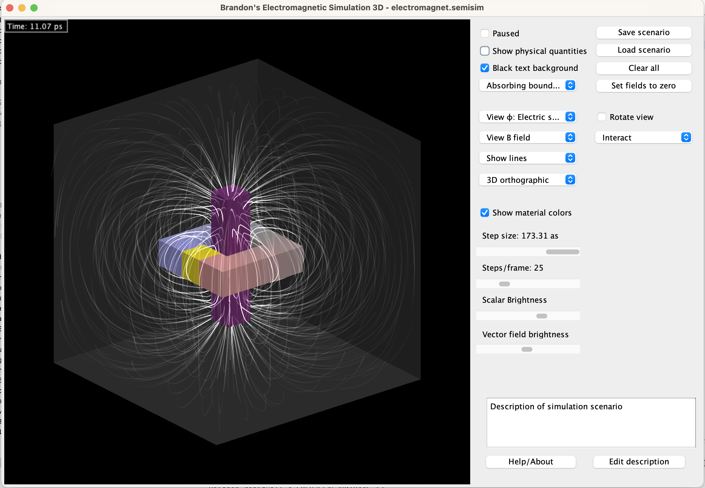

Make sure you have the latest version of Java installed.
If SemiSim crashes when loading a file:
Make sure you have a 64-bit version of Java installed.
Mac OS
If you see "SemiSim.jar cannot be opened because it is from an unidentified developer":
Right click "SemiSim.jar" and click Open.
Click Open again on the popup window.
If you are unable to see and open files:
Go into System Preferences → Security → Privacy → Full Disk Access.
Add /System/Library/CoreServices/Jar Launcher.app to the list and give it disk access.
Introduction
Brandon's electromagnetic simulation simulates simple circuits in three dimensions. Like SemiSim, it allows users to create their own circuits with a simple interface.
There is a variety of materials to choose from and a variety of premade examples to look at.
Physics
The simulation takes place on a three-dimensional cubic grid. It uses an FDTD method to compute the dynamics of the E and B fields. This simulation demonstrates the following concepts:
Electromagnetic fields
Charges
Current and voltage
Capacitance and inductance
Basic electrical circuits
Simulation features
The interface consists of the simulation area which the user can interact with and the settings panel containing all the simulation controls. Simulation area (left) and settings (right).
The main way to interact with circuits is to change the strength of voltage sources and turn switches on and off. The quickest way to get started is to load one of the examples and start changing the voltages.
Simulation variables
Listed below are the most important variables that capture the state of the simulation at a given time:
Left and right eyes are flipped with respect to cross-eye.
Options
Pause
Pauses and unpauses the simulation.
Show detailed info
Displays a tooltip that contains the values of all the simulation variables at the cursor's location.
Show text background
Gives text boxes a black background, making the text easier to see.
Display interface
Shows probe info, graph locations, time, and tooltip.
Boundary condition
Choose between a boundary that absorbs outgoing radiation or a perfectly conductive boundary that reflects it.
Scalar view
Choose which field to display as a color scale over the simulation field.
Vector view
Choose which vector field to visualize (only works for 2D vectors, see "Vector view modes").
3D mode
Choose between different two and three-dimensional persectives.
Show material colors
If checked, gives each material a different color, making them easier to tell apart.
Timestep
Sets the simulation timestep. The maximum timestep is determined by the CFL condition for the wave equation and diffusion equations for each charge carrier.
Sim steps/frame
Sets the number of iterations performed during each frame. Most of the examples require at least 10 steps/frame to run responsively.
The maximum number depends on how good the user's computer is.
Scalar brightness
Sets the brightness of the scalar field.
Vector brightness
Sets the brightness of the vector field.
Parallax
Determines the angle between the two eyes in stereoscopic mode (adjust for comfort).
Save scenario
Saves the current simulation to a file.
Load scenario
Loads a simulation from a file. SemiSim comes with a variety of pre-made simulations located in the "examples" folder.
Clear all
Removes all materials and resets all fields.
Set fields to zero
Sets all fields to their default values, leaving the materials unchanged.
Rotate view
Makes the 3D scene spin around.
Tool
Selects one of the tools.
Tools
Interact
Allows user to control voltage sources and turn switches on and off by clicking.
Draw
Adds material to the field.
Voltage
Adds a voltage probe that measures electrochemical potential at a certain point (See "What do voltmeters actually measure").
Current [click and drag]
Adds a current probe that measures current across a wire.
Ground
Specifies the point relative to which probes measure voltage (optional).
Delete probe
Click to delete a probe.
Replace
Similar to the draw tool, but overwrites occupied areas.
Line [click and drag]
Draws a line of material.
Fill
Fills a region with a certain material, similar to the bucket tool.
Erase
Erases material.
Select
Makes a rectangular selection which can be dragged around and moved.
Select region
Selects a contiguous region, similar to the bucket tool.
Keyboard/Mouse Controls
P or Space
Pause & unpause
F
Advance frame
Q
Change brush shape
C
Toggle material color
V
Toggle vectors
S
Toggle scalar colors
T
Toggle tooltip
G
Toggle text background
H
Toggle user interface
Mouse wheel
Change brush size
Shift
Draw straight lines
Ctrl
Fill area
Alt or Option
Pick material
Ctrl-X
Cut
Ctrl-C
Copy
Ctrl-V
Paste
Left mouse
Draw material
Right mouse
Erase material
Middle mouse
Pick material
Materials
Voltage source
Generates a voltage that can be used to power circuits.
AC voltage source
Voltage source that oscillates sinusoidally at a fixed frequency.
Switch
Conductivity can be switched on and off by the user.
Metal
Material that conducts electricity very well.
Conductive metal
More conductive than regular metal.
Resistive metal
Less conductive than regular metal.
Dielectric
Material with a large permittivity/dielectric constant.
Ferromagnet
Magnetic material with high relative permeability.
Positive static charge
Positively charged insulating material.
Negative static charge
Negatively charged insulating material.
Decoration
Used for text or circuit symbols, has no effect otherwise.
Vacuum
Empty space.
Miscellaneous questions and answers
Why aren't there semiconductors?
The grid resolution of 32x32x32 is not enough to accurately simulate a semiconductor junction. In the future, higher resolutions may become possible.